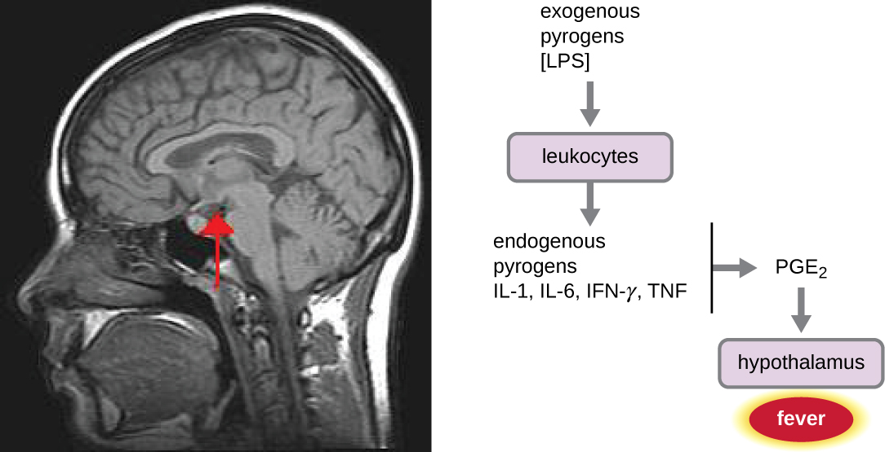
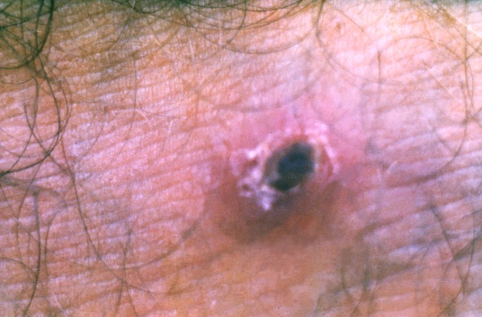
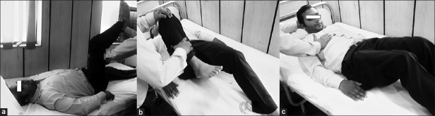

主訴流程
Fever ｜ 發燒 · Pyrexia
筆記更新 2026-07-25·整理狀態：可用
其他名稱 5
Fever · 發燒 · Pyrexia · FUO · 不明熱
鑑別架構圖
先看骨架再看細節。這張圖回答「可能性從哪幾個分支長出來」，不是「先做什麼再做什麼」。⚠ ＝ can't-miss。
flowchart LR
C(["Fever<br/>發燒"])
C --> INF["感染 Infection<br/>最大宗"]
C --> MAL["惡性腫瘤"]
C --> AIR["自體免疫發炎"]
C --> ENDO["內分泌代謝"]
C --> DRUG["藥物・體溫調節"]
INF --> I1["⚠ Sepsis・Meningitis<br/>⚠ Necrotizing fasciitis<br/>肺・尿・腹・皮膚・骨關節<br/>心內膜炎・TB・熱帶病"]
MAL --> M1["血液：Lymphoma・白血病<br/>實體瘤：轉移・壞死<br/>B symptoms 是線索"]
AIR --> A1["SLE・血管炎・Still's<br/>關節・皮疹・黏膜・腎"]
ENDO --> E1["⚠ Thyroid storm<br/>⚠ Adrenal crisis・Pheo"]
DRUG --> D1["⚠ NMS・Serotonin syndrome<br/>⚠ Malignant hyperthermia<br/>Drug fever・戒斷・熱中暑"]
classDef hub fill:#263238,stroke:#000,color:#fff,font-weight:bold
classDef sys fill:#eceff1,stroke:#607d8b,color:#263238,font-weight:bold
classDef leaf fill:#f5f5f5,stroke:#9e9e9e,color:#263238
class C hub
class INF,MAL,AIR,ENDO,DRUG sys
class I1,M1,A1,E1,D1 leaf
筆記中的流程與關係
發燒 vs 高溫：全篇最關鍵的分岔
|
Fever 發燒 |
Hyperthermia 高溫 |
| 機制 |
細胞激素 → PGE₂ → 下視丘設定點被調高；身體「認為」該這麼熱 |
設定點正常，但產熱 > 散熱 |
| 典型病因 |
感染、發炎、腫瘤 |
NMS、serotonin syndrome、malignant hyperthermia、熱中暑、甲狀腺風暴 |
| 病人主觀 |
覺得冷、會發抖（身體想升溫到新設定點） |
覺得熱 |
| 退燒藥 |
有效 |
完全無效 |
| 正確處置 |
治病因；退燒藥主要是為了舒適 |
物理降溫 ＋ 移除病因 ＋ 特異解藥（如 MH 用 dantrolene） |
| 溫度上限 |
少超過 41°C（設定點有天花板） |
可超過 41°C，沒有上限 |

LPS 等外源性 pyrogen 先刺激白血球，經 IL-1／IL-6／IFN-γ／TNF 促成 PGE₂，再作用於下視丘把設定點上移；NSAID／acetaminophen 的作用點在 PGE₂ 上游的 COX。這張圖畫的是 fever；hyperthermia 的設定點不變，問題在產熱過多或散熱失敗。Source: OpenStax Microbiology, Figure 17.26（CC BY-NC-SA 4.0）。
病史 History
發燒的病史有兩層：第一層問「發燒本身」，第二層從頭到腳掃一遍找感染源。第二層才是拿到診斷的地方。
第一層：發燒本身
| 問題 |
若為「是」→ 想到 |
| 有沒有寒顫到發抖、牙齒打顫？（true rigor） |
強烈提示菌血症——尤其尿路、膽道、導管來源 |
| 燒多久了？ |
急性（<1 週）以感染為主；>3 週且查不出來 → 進入不明熱思路（見下方） |
| 一天燒幾次？有時間規律嗎？ |
發燒型態的鑑別價值有限，別過度解讀；例外是瘧疾的週期性發作 |
| 退燒藥有沒有效？ |
完全無效 → 想 hyperthermia（見上表） |
| 有沒有體重減輕、夜間盜汗？ |
B symptoms → Lymphoma↗、Tuberculosis↗ |
第二層：從頭到腳找感染源
| 問什麼 |
指向 |
| 頭痛、頸部僵硬、畏光、意識改變 |
Meningitis↗ |
| 鼻塞、臉部悶痛、牙痛 |
鼻竇炎、牙源性感染 |
| 咳嗽、有痰、喘、胸痛 |
Pneumonia、Empyema |
| 腹痛、腹瀉、黃疸 |
腹腔內感染、Acute cholangitis↗ |
| 頻尿、尿痛、腰痛 |
Acute pyelonephritis↗、UTI↗ |
| 皮膚傷口、紅腫、褥瘡、蟲咬 |
蜂窩性組織炎、Necrotizing fasciitis↗、Scrub typhus↗ |
| 關節紅腫熱痛、無法負重 |
化膿性關節炎、骨髓炎 |
| 肛門周圍痛（病人常不好意思說） |
肛周膿瘍——免疫低下者特別要問 |
第三層：不能漏的背景
理學檢查 PE
發燒的 PE 原則只有一句：找感染源要從頭摸到腳，包含你不好意思看的地方。 感染源找不到，多半是漏了皮膚、口腔、關節、會陰這四處。
| 部位 |
要找什麼 |
| 皮膚（全身，含背側） |
Rash（壓得退嗎）、eschar 焦痂、傷口、褥瘡、蜂窩組織炎、針孔、栓塞性病灶 |
| 頭頸 |
結膜蒼白／出血點、鞏膜黃疸、口腔 thrush／齲齒、鼻竇壓痛 |
| 腦膜刺激徵 |
頸部僵硬、Kernig sign、Brudzinski sign |
| 淋巴結 |
頸部 → 腋下 → 鼠蹊三處都要摸；記錄大小、硬度、可動性、有無壓痛 |
| 甲狀腺 |
Goiter、壓痛 |
| 心 |
新出現的雜音 → Infective endocarditis；心包摩擦音 |
| 肺 |
Crackles、呼吸音減弱、叩診濁音 |
| 腹 |
肝脾腫大、局部壓痛、腹膜炎徵象 |
| CV angle knocking |
陽性 → Acute pyelonephritis↗ |
| 關節 |
紅腫熱痛、活動範圍受限、關節積液 |
| 會陰／肛周・直腸 |
肛周膿瘍、攝護腺壓痛 |
| 導管與植入物 |
穿刺處紅腫、分泌物 |

恙蟲病典型 eschar：中央黑色壞死焦痂，外圍有紅暈。臨床上要主動翻找腋下、腹股溝、腰際與乳房下等被衣物遮住的皺褶。Source: CDC Public Health Image Library, PHIL 23438（public domain）。

由左至右：Kernig sign（髖、膝先屈曲 90°，伸膝時疼痛／阻力）、Brudzinski 對側腿徵、Brudzinski neck sign（被動屈頸後髖膝反射性屈曲）。兩徵敏感度低，陰性不能排除腦膜炎。Source: Mehndiratta et al., Ann Indian Acad Neurol 2012, Figure 1。
第一批檢查 Initial Workup
| 時機 |
檢查 |
想回答的問題 |
| 立刻 |
Blood culture↗ ×2（不同部位、給抗生素前） |
有無菌血症、菌種與敏感性 |
| 立刻 |
CBC with differential↗ |
白血球高低、left shift、ANC、blast、cytopenia |
| 立刻 |
CRP、ESR |
發炎程度與趨勢 |
| 立刻 |
生化：肝腎功能、電解質、lactate |
器官灌流與功能 |
| 立刻 |
Urinalysis↗ ＋ 尿培養 |
泌尿道感染 |
| 立刻 |
Chest X-ray↗ |
肺炎、胸水、粟粒狀病灶 |
| 依情境 |
Procalcitonin↗ |
輔助判斷細菌性感染（不能單獨決定給不給抗生素） |
| 依情境 |
痰培養＋抗酸染色 |
Pneumonia、Tuberculosis↗ |
| 依情境 |
Lumbar puncture↗ |
有腦膜刺激徵或意識改變 |
| 依情境 |
TSH、free T4 |
心搏過快、顫抖、體重減輕、甲狀腺腫 |
| 依情境 |
自體免疫標記（ANA、RF、anti-dsDNA、C3/C4、ENA） |
有關節、皮疹、黏膜、腎臟表現 |
| 依情境 |
熱帶病：登革熱 NS1／血清學、瘧疾血液抹片、恙蟲病血清學 |
有旅遊或戶外接觸史 |
| 依情境 |
HIV 篩檢 |
反覆或伺機性感染、不典型表現 |
| 依情境 |
腹部超音波／CT |
腹腔內膿瘍、肝膽病灶、淋巴結腫大 |
鑑別診斷
依「致命 → 常見 → 少見但要想到」分層。頂部的 can't-miss 是這張表第一層的濃縮。
致命（can't-miss）
| 疾病 |
支持線索 |
排除方法 |
| Sepsis↗ |
低血壓、意識改變、呼吸快、末梢差 |
Lactate、血液培養、器官功能 |
| Febrile neutropenia↗ |
近期化療、口腔潰瘍 |
CBC/DC 算 ANC |
| Meningitis↗ |
頭痛、頸僵、意識改變 |
腦膜刺激徵 → Lumbar puncture↗ |
| Necrotizing fasciitis↗ |
痛不成比例、皮膚張力／變色、捻髮感 |
外科急會診（不等影像） |
| Thyroid storm |
心搏極快、躁動、腹瀉、goiter |
TSH、free T4 |
| Adrenal crisis |
對輸液無反應的低血壓、低鈉高鉀 |
先給 hydrocortisone，再驗 cortisol |
| Neuroleptic malignant syndrome↗ |
肌肉僵硬、CK 高、抗精神病藥 |
停藥、CK、物理降溫 |
| Malaria↗ |
旅遊史、週期性高燒寒顫 |
血液抹片 |
常見
| 疾病 |
支持線索 |
排除方法 |
| Pneumonia |
咳嗽有痰、crackles、喘 |
CXR、痰培養 |
| Acute pyelonephritis↗ |
頻尿尿痛、CV angle 敲痛 |
U/A、尿培養 |
| Cellulitis↗ |
局部紅腫熱痛、界線不清 |
臨床 ± 影像 |
| Influenza↗ ／病毒感染 |
全身痠痛、上呼吸道症狀、群聚 |
快篩 |
| Acute cholangitis↗ |
Charcot 三徵 |
膽紅素、ALP、腹超 |
| Dengue fever↗ |
眼窩痛、骨頭痛、皮疹、流行區旅遊 |
NS1、血清學；注意血小板與出血 |
| Drug fever |
新加藥物 2–4 週內、病人看起來沒那麼病、嗜酸性球可能升高 |
停藥試驗——停藥後 72 小時內退燒 |
少見但要想到
| 疾病 |
支持線索 |
排除方法 |
| Infective endocarditis |
新雜音、栓塞現象、靜脈注射藥物、人工瓣膜 |
血液培養 ×3、心臟超音波 |
| Tuberculosis↗ |
久咳、盜汗、體重減輕、接觸史 |
痰抗酸染色／培養、CXR |
| Lymphoma↗ |
無痛性淋巴結腫大、B symptoms、肝脾腫大 |
淋巴結切片、CT |
| AML ／急性白血病 |
貧血、出血、易感染，抹片見 blast |
CBC/DC、骨髓檢查 |
| SLE↗ |
關節痛、頰部紅斑、光敏感、口腔潰瘍、蛋白尿 |
ANA、anti-dsDNA、C3/C4 |
| Still's disease |
高燒＋一過性鮭魚色皮疹＋關節炎，ferritin 極高 |
排除性診斷 |
| 巨細胞動脈炎等血管炎 |
老年、頭痛、顳動脈壓痛、視力變化 |
ESR、顳動脈切片 |
| Scrub typhus↗ 恙蟲病 |
戶外草叢接觸、eschar |
血清學；doxycycline 反應快 |
| Cryptococcal meningitis↗ |
亞急性頭痛、免疫低下／HIV |
CSF india ink、cryptococcal antigen |
| 深部膿瘍（肝、腎周、肛周、腰肌） |
定位不明的持續發燒、局部悶痛 |
腹部 CT |
| 藥物性高溫（serotonin syndrome、MH） |
肌陣攣／僵硬、自律神經不穩、用藥史 |
臨床 ＋ CK；停藥與降溫 |
處置分流 Disposition
| 去向 |
條件 |
| 立即急救 |
敗血性休克、意識改變、呼吸衰竭、疑似壞死性筋膜炎、體溫 > 41°C 的高溫 |
| ICU |
需升壓藥、器官衰竭、需密切監測的高溫或代謝危象 |
| 住院 |
嗜中性球低下發燒（一律住院）、免疫低下、無法口服、需靜脈抗生素、診斷未明但看起來病態 |
| 門診追蹤 |
Vital signs 穩定、來源明確且可口服治療、免疫正常、有人陪伴且能回診 |
禁忌與陷阱
相關連結
- Sepsis↗ — 第一個要排除的
- Febrile neutropenia↗ — 唯一以「小時」計時的發燒
- Blood culture↗ — 採檢時機與套數
- Lumbar puncture↗ — 適應症與先後順序
- Tuberculosis↗ · Lymphoma↗ · SLE↗ — 長期發燒的三大方向
- 禁忌選項 — 上表已收錄